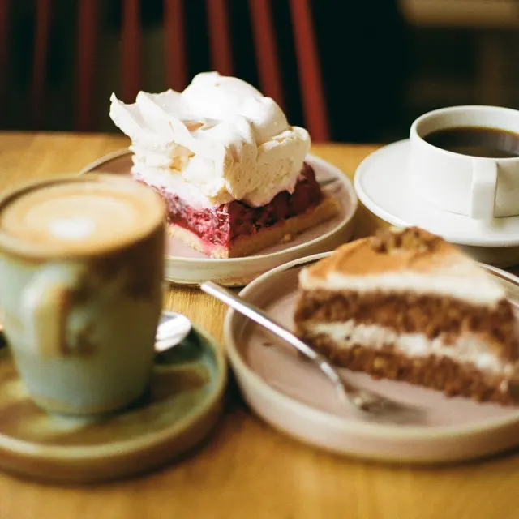
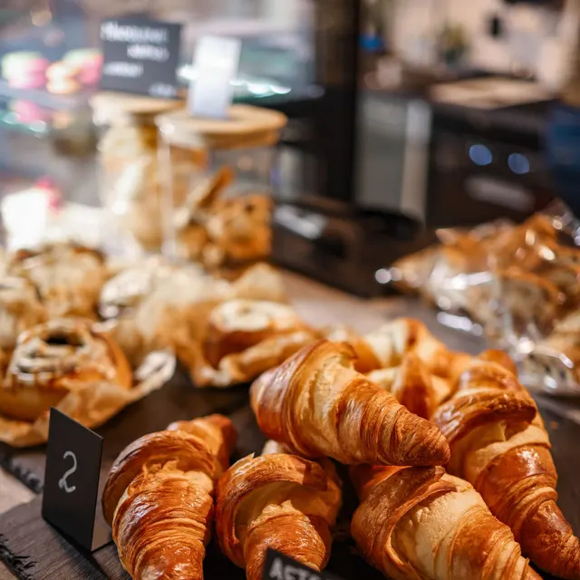

写真 1 枚で、投稿文は AI におまかせ
お店の雰囲気や言葉づかいを覚えて、ハッシュタグつきの文章案を 3 つ。選んで少し直すだけで投稿できます。
- 1 投稿の作成時間
- 30分 → 5分
カフェ・美容室・小さなお店の SNS 集客ツール
写真を 1 枚選ぶだけ。投稿文の案づくりから、Instagram・TikTok・LINE への予約投稿、来店につながったかの分析まで、ミセルポがまとめて引き受けます。
※ クレジットカードの登録は不要です。数値はすべて架空です。
カフェ・美容室・パン屋・教室など、街のお店で使われています
ABOUT
「作る・投稿する・振り返る」を、1 つの画面で。
お店写真を選ぶだけ
ミセルポ
投稿先
FEATURES
お店の雰囲気や言葉づかいを覚えて、ハッシュタグつきの文章案を 3 つ。選んで少し直すだけで投稿できます。
Instagram・TikTok・LINE に一度に。フォロワーがいちばん多く見ている時間を、自動で選びます。
いいねの数だけでなく、予約・道順の表示・クーポン利用まで投稿ごとに集計。次に何を出せばいいかも提案します。
※ 数値はすべて架空です。
USE CASE
hitotoki_coffee

雨の日限定 本日はお席に余裕があります。ドリンク 50 円引きです。
導入 3 か月の平均（架空）平日ランチの来店 +18%
salon_mint
空き情報 本日 15 時から 1 枠あります。プロフィールのリンクから予約できます。
導入 3 か月の平均（架空）当日予約 +24%
pan_komugi

焼きたて 11 時にクロワッサンが並びます。
導入 3 か月の平均（架空）午前中の来店 +15%
atelier_iroha
体験会 11 月の無料体験、受付中です。
導入 3 か月の平均（架空）体験申込み +30%
SIMULATION
業種と今の状況を選ぶと、1 か月の目安がわかります。
例：カフェ・フォロワー 800 人・週 3 回投稿の場合
※ 架空の計算式による目安です
SUPPORT
初期設定は、専任スタッフが画面を見ながら一緒に。毎月の振り返りレポートで「次の一手」もお伝えします。
サポート満足度 98%（※架空）
FUNCTIONS
PRICING
初期費用 0 円。最初の 30 日間は無料です（価格は架空です）。
| 項目 | フリー¥0 | いちばん人気ベーシック¥2,980/月 | プロ¥6,980/月 | 複数店舗お見積り |
|---|---|---|---|---|
| つなげる SNS | 1 つ | 3 つ | 無制限 | 無制限 |
| 予約投稿 | 月 10 件 | 無制限 | 無制限 | 無制限 |
| AI 投稿文 | 月 10 回 | 月 100 回 | 無制限 | 無制限 |
| 来店・予約の計測 | なし | あり | あり | あり |
| 月次レポート | なし | あり | あり（担当者の解説つき） | あり |
| 店舗ごとの管理 | なし | なし | なし | あり |
| お申し込み |
CASE STUDY
カフェ（席数 24）・東京都
以前は週 2 回がやっと。いまは毎朝自動で投稿されて、平日の来店が増えました。
美容室（スタッフ 4 名）・大阪府
キャンセルが出たらすぐ投稿。スタッフ全員で同じ画面を見られるのも助かっています。
こども絵画教室・福岡県
作品の投稿がいちばん反応がいいと分かり、内容を絞れるようになりました。
※ お店・数値はすべて架空です。
FAQ
はい。アカウントづくりから、専任スタッフが一緒に設定します。
いいえ。必ずお店の方が確認・修正してから予約されます。
お支払い方法を登録するまで課金されません。登録しなければフリープランに切り替わります。
はい。スマホのブラウザから、すべての機能が使えます。
ベーシック以上のプランで、スタッフごとのログインと投稿前の承認を設定できます。
いつでも管理画面から解約できます。解約金はかかりません。
機能と料金を 1 冊で
メールアドレスだけで 1 分
オンラインで 30 分、使い方をご案内